Getting a surface from fits of the approach curves
This file is a tutorial, showing how to get a surface from fits of the approach curves. The data is stored in the folder tut1 of the +SICM folder.
First, load the scan:
scan = SICM.SICMScan.FromFile(['tut1' filesep 'scan01_07.sic'])
scan =
SICMScan with properties:
zdata_grid: [14x14 double]
starttime: NaN
endtime: NaN
duration: NaN
approachcurves: []
xsize: 0.9380
ysize: 0.9380
xpx: 14
ypx: 14
stepx: 0.0670
stepy: 0.0670
xdata_lin: [196x1 double]
ydata_lin: [196x1 double]
zdata_lin: [196x1 double]
xdata_grid: [14x14 double]
ydata_grid: [14x14 double]
and display the data:
figure('Position',[30 30 800 375]);
plot(scan); view(15,-70);
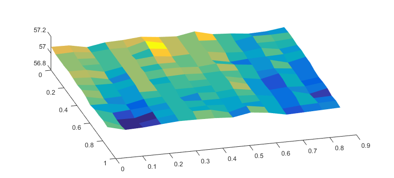 The approach curves are located in the folder scan01_07_ACs. The file names of the approach curves is a combination of the string 'scan_01_07_', followed by the pixel number (starting from 0) and the file extension '.ac'.
To read the approach curves in a single run, we can use the readAllAppCurves method. The input argumeńt of this method is a function handle, pointing to a function which accepts three arguments (x, y and i), where x and y are the x- and y-coordinates of the current data point an i is the current pixel number. The function should return the corresponding file name of the current approach curve. A suitable function would be:
getAppCurveFileName = @(x, y, i)(... sprintf('tut1/scan01_07_ACs/scan01_07_%g.ac', i-1));
We than call readAllAppCurves with the handle of this function:
scan.readAllAppCurves(getAppCurveFileName);
Plot one of the approach curves to see whether it really worked:
clf;
plot(scan.approachcurves{5,7});
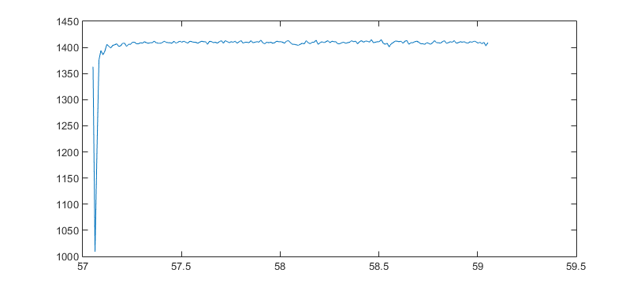 To detila the steps required to obtain the surface from the approach curve, we will use this approach curve as an example. So, let's get a copy of the curve object. We use the static method fromSICMAppCurve_ for this:
app = SICM.SICMAppCurve.fromSICMAppCurve_(scan.approachcurves{5,7});
Approach curves could have different characteristics: First, the change in the y-value when reaching the surface is either an increase or a decrease, depnding on whether SICM was operated in VC or CC mode (or whether resistance or conductance were recorded). Second, the change in resistace can either occur at increasing or decreasing x-values, depending on how the pipette is mounted in the SICM. Both informations are required for fitting the data. You can either set these characteristics manually, for example:
app.setMode(SICM.SICMAppCurves.modes.VC); app.setDirections(SICM.SICMAppCurves.directions.DEC);
or you can tell the object to try to find mode and direction autmatically by calling
app.guessCurveType();
The curve shonw above has a drop in the y-value (the current has been recorded), hence it is in VC mode. To test whether this has been automatically detected, use:
app.isVCMode()
ans =
1
The results 1 corresponds to True, hence the mode of the app curve is VC. Furthermore, the drop occurs when the x-values decrease, hence the direction should be decreasing:
app.isDEC()
ans =
1
Additionally, guessCurveType() has set a fit function for the approach curve object:
app.fitfunc
ans =
@(I0,C,D,x)(I0.*(1+C./(x-D)).^-1)
Thus, we can try to fit this function to the data and view the results:
clf; app.fit(); app.plotAll();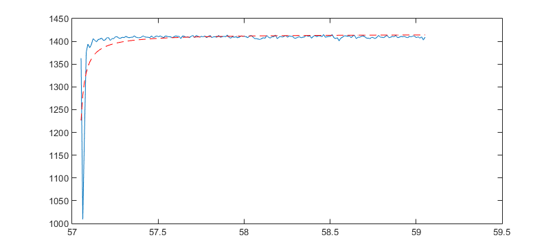
Let's zoom into the interesting part of the data and the fit and plot the threshold, too;
set(gca,'Xlim',[57 57.8]); set(gca,'Ylim',[1250 1450]); hold on; plot([57 57.8], [app.fitobject.I0*.975, app.fitobject.I0*.975, ],'k--');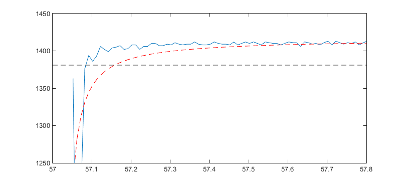
We see that the last few data point impact the fit dramatically. To optimize the fit for a certain Threshold, we can use
app.fitToThreshold(.975);
Warning: Fitting is likely to enter an infinite loop. Stopping after 4 attempts.
You see that a warning was raised since the autometd fit porcess encountered an infinite loop, and hence automatic fitting was stopped. However, this is not necessarily a problem, let's add the new fit to the plot...
x = linspace(app.inversefitfunc(... app.fitobject.I0, app.fitobject.C, app.fitobject.D,... .975 * app.fitobject.I0), 59, 200); plot(x, feval(app.fitobject, x), 'k-'); set(gca,'Xlim',[57 57.8]); set(gca,'Ylim',[1250 1450]);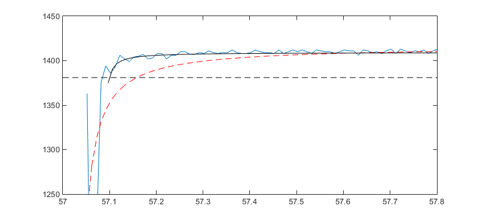
While the new fit might not be perfect, it is much better than the first one. To see the strategy used to fit to a certain threshold, look at the code of the method SICMAppCurve.fit.
We now have to repeat these steps for all approach curves in the scan object (expect a lot of warnings):
scan.eachAppCurve(... @(x)(x.guessCurveType())); scan.eachAppCurve(... @(x)(x.fit())); scan.eachAppCurve(... @(x)(x.fitToThreshold(.975)));
Warning: Fitting is likely to enter an infinite loop. Stopping after 3 attempts. Warning: Fitting is likely to enter an infinite loop. Stopping after 2 attempts. Warning: Fitting is likely to enter an infinite loop. Stopping after 2 attempts. Warning: Fitting is likely to enter an infinite loop. Stopping after 1 attempts. Warning: Fitting is likely to enter an infinite loop. Stopping after 2 attempts. Warning: Fitting is likely to enter an infinite loop. Stopping after 4 attempts. Warning: Fitting is likely to enter an infinite loop. Stopping after 5 attempts. Warning: Fitting is likely to enter an infinite loop. Stopping after 6 attempts. Warning: Fitting is likely to enter an infinite loop. Stopping after 1 attempts. Warning: Fitting is likely to enter an infinite loop. Stopping after 4 attempts. Warning: Fitting is likely to enter an infinite loop. Stopping after 3 attempts. Warning: Fitting is likely to enter an infinite loop. Stopping after 2 attempts. Warning: Fitting is likely to enter an infinite loop. Stopping after 2 attempts. Warning: Fitting is likely to enter an infinite loop. Stopping after 3 attempts. Warning: Fitting is likely to enter an infinite loop. Stopping after 2 attempts. Warning: Fitting is likely to enter an infinite loop. Stopping after 4 attempts. Warning: Fitting is likely to enter an infinite loop. Stopping after 4 attempts. Warning: Fitting is likely to enter an infinite loop. Stopping after 3 attempts. Warning: Fitting is likely to enter an infinite loop. Stopping after 5 attempts. Warning: Fitting is likely to enter an infinite loop. Stopping after 3 attempts. Warning: Fitting is likely to enter an infinite loop. Stopping after 3 attempts. Warning: Fitting is likely to enter an infinite loop. Stopping after 2 attempts. Warning: Fitting is likely to enter an infinite loop. Stopping after 2 attempts. Warning: Fitting is likely to enter an infinite loop. Stopping after 3 attempts. Warning: Fitting is likely to enter an infinite loop. Stopping after 5 attempts. ...
There have been a lot of arnings. However, let's generate a new surface from the approach curves:
scan2 = scan.updateZDataFromFit(0.975); clf; subplot(1,2,1); plot(scan); title('Original data'); view(15,-70); subplot(1,2,2); plot(scan2); title('Updated data'); view(15,-70);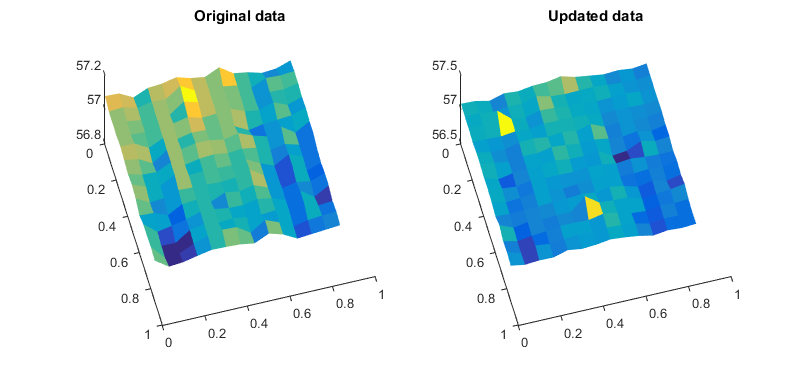
While the data looks less crowdy, some peaks occur which are most likely due to improper fitting. If a automated fit process was stopped due to an infite loop, the corresponding fitproblems property of the AppCurve object is set to one. To receive a map of problemativ fits, we can loop over the approach curves using cellfun:
problems = cellfun(@(x)(x.fitproblems), scan2.approachcurves); clf; subplot(1,2,1); imagesc(scan2.zdata_grid); title('Surface');axis image; subplot(1,2,2); imagesc(problems);title('Problems');axis image;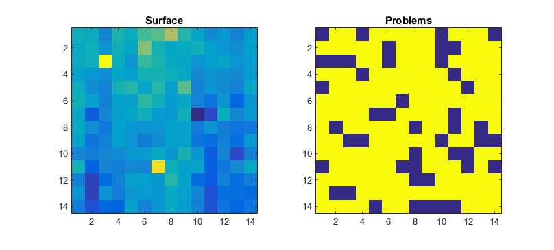
The problematic fits can now be investigated an optimized manually. However, some of the fits might be ok, although they encountered an infinite loop. They can be reviewed using
scan.reviewProblematicFits()
I omit this here since it woul results in about 150 images in this file.
Instead, let's inspect a curve manually:
clf; app = scan.getAppCurve(4); app.plotAll();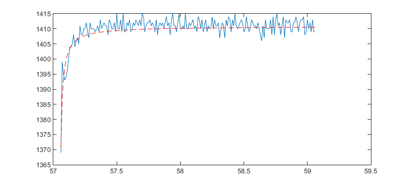
Indeed, the fit isn't very good. To start a manual fit session, use:
app.fittool();
Assume, you have saved the fit in appfit, you can set the fit of the approach curve by
app2 = app.setFitobject(appfit);
After one has reviewed and, if necessary, fitted all data, the surface looks like this:
scan3 = scan.updateZDataFromFit(0.975);
clf; subplot(1,2,1); plot(scan); title('Original data'); view(1,0); set(gca, 'ZLim', [56.9 57.3]); set(gca, 'XLim', [0 max(scan.xdata_lin)]); subplot(1,2,2); plot(scan3); title('Reviewed and improved data'); view(1,0); set(gca, 'ZLim', [56.9 57.3]); set(gca, 'XLim', [0 max(scan3.xdata_lin)]);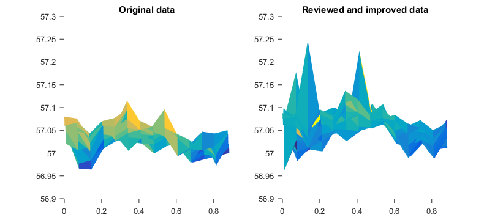
It is obvious that the data has changed, but not really improved. Let's look at the C-values from the fits:
C = cellfun(@(x)(x.fitobject.C), scan3.approachcurves); clf; imagesc(C); colorbar;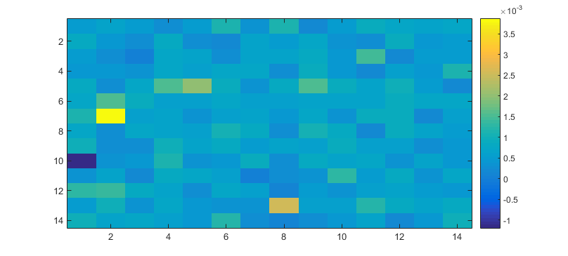
First of all, there is a data point which has a negative C-value, which is impossible. This might be either due to bad automatic or manual fitting. Next, the values differe quite a lot.
There are two reasons for this:
- insufficient data sampling
- to noisy data.
If we use the data from Denis' Analytical Chemistry paper, the value for C is approximately 0.005 r, where r is the pipette radius (of course this value might differ due to a different opening angle of the pipettes used here. However, the order of magnitude should be the same. If we omit the negative C-value here and lokk at the median C-value, we recieve
C = C(C>=0); Cm = median(C)
Cm = 6.1399e-04
If we compar the to the opening radius of approximately 50 nm, we get
Cm/.05
ans =
0.0123
which is in the same order of magnitude as in Denis paper. Let's draw an approach curve using Cm:
x = linspace(0.001,.2, 2000); clf; plot(x, (1+Cm./x).^-1); set(gca,'XLim',[-.05, .2]); set(gca,'YLim',[0.9, 1.050]); hold on;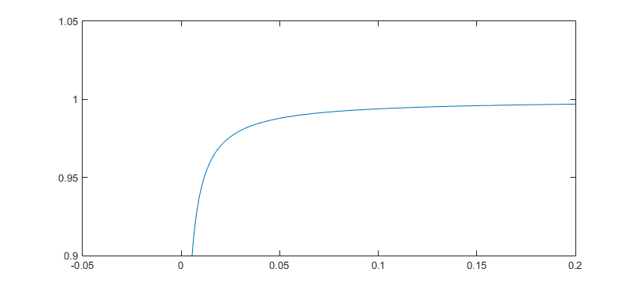
Assume we have a noise of 1% of I0 (which is not true, the noise dramatically increases with decreasing current).
plot([-.05 .2], [.99 .99], '--','Color',[.5 1 .5]); plot([-.05 .2], [.975 .975], 'k--'); legend({'data', 'noise', 'threshold'});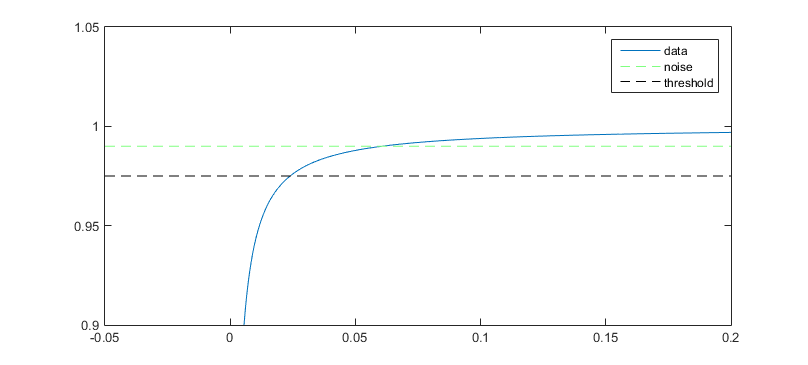
If we compute the x-values at which the approach curve crosses the noise and the threshold lines
x1 = Cm/(1/0.99 -1); x2 = Cm/(1/0.975 -1);
and also add them to the plot:
plot([x1 x1],[.9 1.05], 'r-'); plot([x2 x2],[.9 1.05], 'r-');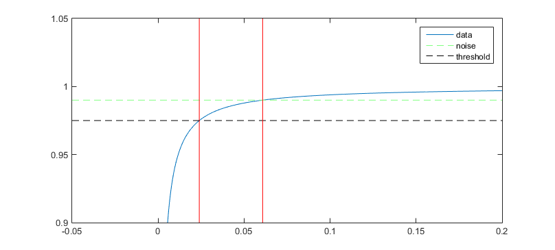
we see the narrow region which is important do detect the surface and to fit an approach curve. This distance is:
x1-x2
ans =
0.0368
Hence, if we approach with a sampling rate of 100nm^-1, this rate is approxiamtely 3 times the size, hence it is very likely that we miss this area. However, which step size would be sufficient? Let's say, we want to sample the interestingregion with at least 10 data points. We than need a step size of approximately 3 nm. Moving the piezo by such small distances requires suitable equipment, as long as no data is recorded during the movement as we do in pulse mode. Given a DA-board with a sampling range of 16 bit (2^16) which maps to 0 to 10V (which is the input voltage of the piezo), using a 100µm piezo, the minimal output is:
100/(2^16)
ans =
0.0015
This shows that a stpe size of approximateyl 1nm is the minimum which can be technically achieved in pulse mode using a 100µm piezo, hence recordings with pipettes like this are very close to the limit of the instrument.